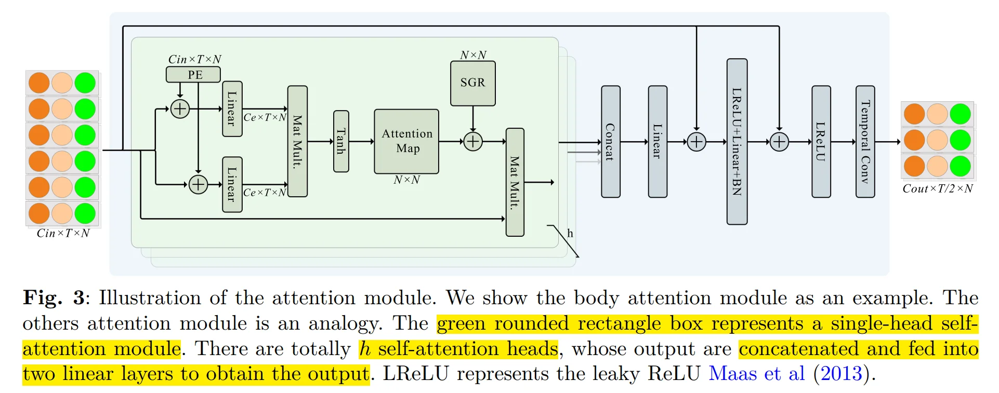

MSKA 架构计算流程详解¶
论文: https://arxiv.org/pdf/2405.05672
I. 基本流程概念¶
- 输入：关键点序列（左手、右手、面部、全身）
- 输出：手语识别结果（SLR）或手语翻译结果（SLT）
计算流程：
- 先把关键点按语义拆成 4 个流：left hand / right hand / face / body。
-
每个流经过多层堆叠的 Attention Module 进行时间和空间信息的交融。
- 空间信息交流： Self Attention + Spatial Global Regularization
- 时间信息交流： 2D CNN + Temporal Conv Layer
- 多个流的结果再通过 fuse head + ensemble + self-distillation 互相“交流”。
- 最后输出手语识别结果（SLR）或手语翻译结果（SLT）。
II. 计算流程细节¶
2.1 输入张量¶
2.1.1 关键点序列¶
论文输入是 关键点序列。
每一帧用若干关键点表示，每个关键点有：
- \(x_t^n\)：第 \(t\) 帧第 \(n\) 个点的 x 坐标
- \(y_t^n\)：第 \(t\) 帧第 \(n\) 个点的 y 坐标
- \(c_t^n\)：该点置信度
所以原始输入张量写成：
其中：\(C=3\)，对应 \([x,y,c]\), \(T\): 帧数, \(N\): 关键点数
论文用的是 79 个点，所以全局输入大致是：
这 79 个点来自：42 个手部点 + 11 个上半身点 + 部分面部点。
当然，这里还需要经过数据增强，主要流程包含：
1. 图像坐标系平移到图像中心，并归一化到大致 \([-1,1]\) 范围
2. 时间长度缩放（抽帧/变速）
3. 空间位置扰动（随机平移/旋转/缩放）
其中最有效的是时间长度缩放以及旋转。
2.1.2 分流¶
这是整个模型的第一个关键设计：把同一段手语序列拆成四个子序列分别处理：
- Left stream：左手关键点
- Right stream：右手关键点
- Face stream：面部关键点
- Body stream：整体/身体关键点
如果用张量表示，就是把原来的 \(X \in \mathbb{R}^{3\times T\times 79}\) 切成：
- \(X_L \in \mathbb{R}^{3\times T\times N_L}\)
- \(X_R \in \mathbb{R}^{3\times T\times N_R}\)
- \(X_F \in \mathbb{R}^{3\times T\times N_F}\)
- \(X_B \in \mathbb{R}^{3\times T\times N_B}\)
其中 \(N_L,N_R,N_F,N_B\) 分别是每个流中的关键点数。
论文图 2 中也直接标了各流输入都是 \(C_{in},T,N\) 的形式，只是每个流的 (N) 不同。
分流的意义
左手更关注非主导手动作，右手更关注主导手动作，面部更关注表情和嘴型，身体更关注整体姿态。分流后每个流可以专注于不同的语义信息。
2.2 Attention Module——每个流内部的计算¶
Attention Module 内部的大致流程为：
关键点序列输入 → 双流 → 位置编码 → 线性映射 → Mat Mult. → tanh → \(N\times N\) Attention Map → 与全局注意力矩阵结合做 SGR → 多head拼接 →线性函数映射 → 残差连接 → 激活 → Temporal Conv Layer
2.2.1 关键点序列输入¶
对于每一个流，关键点序列形状为： $\(X \in \mathbb{R}^{C_{in}\times T\times N_s}\)$ ，其中:
- \(C_{in}\)：每个关键点的通道数，最开始是 3 ，之后的各个 block 会不对扩大
- \(T\)：时间长度，帧数
- \(N_s\)：该流中的关键点数（比如 body 流是 11，face 流是 26，left hand 流是 21，right hand 流是 21）
2.2.2 双流¶
这里的双流是直接把原始关键点序列拷贝两份，分别进行后续的流程。
为什么要拷贝两份？相当于计算 Attention Matrix 中的 \(Q\) 和 \(K\)。
这里我们先想想 Attention Matrix 是在做什么，它是怎么计算的。
这篇论文里，这个 attention 主要是 空间 attention，不是时间 attention。
也就是说：输入里有 \(T\) 帧，每一帧里有 \(N_s\) 个关键点，它想学的是：同一帧内，这 \(N_s\) 个关键点彼此之间的关系
所以最后才会得到一个：\(N_s \times N_s\) 的 attention map。
在原始 Self-Attention 里，这个 Attenion Matrix 需要通过 \(Q\) 和 \(K\) 构造出，即：
其中 \(Q\) 和 \(K\) 的维度都是 \(N_s \times d_k\)，其中 \(N_s\) 就是输入的关键点数，\(d_k\) 是每个关键点向量的特征维度。这两个矩阵都是输入张量（也就是这里的关键点序列 \(X\) ）通过线性变换得来的，因此我们就需要把输入张量复制两份，分别经过不同的线性变换得到 \(Q\) 和 \(K\)。
2.2.3 位置编码¶
这里的位置编码只做空间位置编码，不做时间位置编码。我们在后面的 Temporal Conv Layer 才会考虑时间信息的交融。
这里的空间位置编码，是想告诉网络当前这个关键点是躯干中的哪一个关键点，相当于给每个关键点一个独特的 ID。
输入张量的维度 \(X \in \mathbb{R}^{C_{in} \times T \times N_s}\)，PE 的维度也是 \(PE \in \mathbb{R}^{C_{in} \times T \times N_s}\)（当然 PE 的每一帧都相同）
位置编码：
2.2.4 线性映射¶
位置编码后的输入张量 \(X\) 会经过两个线性映射函数，分别得到 \(Q\) 和 \(K\)。
线性映射体现在通道数的改变，比如对于第 \(t\) 帧，第 \(n\) 个关键点，其形状原本是：
$\(x_{(t,n)} \in \mathbb{R}^{C_{in}}\)$，经过映射后得到：
把所有关键点拼接起来，就得到：
其中： \(Q \in \mathbb{R}^{C_{e} \times T \times N_s}\), \(K \in \mathbb{R}^{C_{e} \times T \times N_s}\). 这里 \(C_e \neq C_{out}\)
Note
这是把原始的 ((x,y,c)) 或更高维特征，投影成更适合比较相关性的表示空间。可以把它想成：一路负责“我想看谁”（Query），一路负责“我能提供什么线索”（Key）
2.2.5 矩阵乘法¶
如果我们想得到“关键点与关键点之间”的关系矩阵，那么就要把每个关键点在整个时间序列里的信息整理成一个向量。
这种整理方式很简单，在原始的 Attention 里使用的是 Embbeding，在这里我们直接把每个关键点的信息在通道维度以及时间维度上展平即可：
因此有：
此时再做矩阵乘法(Mat Mult.)就能得到矩阵：
在矩阵 \(A\) 中，每个元素 \(A_{ij}\) 就表示第 (i) 个关键点与第 (j) 个关键点之间的相关性，这个相关性是通过比较它们在整个时间序列上的特征向量得到的。
案例：
对于 \(C=2, T=3, N_s=4\) 的输入张量的其中一个流：
进行展平，变成每个关键点的向量表示：
同理，另一个流的展平结果也是：
$\(K'= \begin{bmatrix}
w_{11} & w_{21} & w_{31} & z_{11} & z_{21} & z_{31} \\
w_{12} & w_{22} & w_{32} & z_{12} & z_{22} & z_{32} \\
w_{13} & w_{23} & w_{33} & z_{13} & z_{23} & z_{33} \\
w_{14} & w_{24} & w_{34} & z_{14} & z_{24} & z_{34} \\
\end{bmatrix}\)$
\(4\times 4\) 的矩阵乘法即可表示为：
之后便可得到一个 \(4 \times 4\) 的矩阵 \(A\)
2.2.6 Tanh 激活函数¶
上面的矩阵 \(A\) 经过 \(\tanh\) 激活得到 Attention Matrix
Note
\(\tanh\) 的取值范围是 \((-1,1)\)，相比于 Softmax 的 \((0,1)\)，它既能捕捉正相关关系（接近 1）又能捕捉负相关关系（接近 -1），因此更适合表示关键点之间的复杂关系。
从“任意实数相关性分数”，压缩成“稳定范围内的关系强弱”，避免数值爆炸。
2.2.7 Spatial Global Regularization¶
在得到 Attention Matrix 之后，论文引入了一个全局注意力矩阵SGR，这个矩阵是一个 \(N_s \times N_s\) 的矩阵，表示身体关节之间的普遍关系。这个全局注意力矩阵在所有数据实例间共享，并在网络训练过程中与其他参数协同优化。
SGR 作用：
2.2.8 Attention Matrix 作用回输入¶
这是注意力机制最关键的一步，得到 attention map 后，要回去重新加权关键点特征。
设原始输入为：
Attention Matrix 为：
那么对每个时间步 \(t\)、每个通道 \(c\)，都可以做：
这里：\(X_{c,t,:}\) 是一个长度为 \(N_s\) 的向量，右乘 \(A\) 后，仍得到长度为 \(N_s\) 的向量
所以整体输出仍然是：
这里的得到的输出与原始输入做 Residual Connection 后，得到这一步的输出：
以上模块就是空间注意力模块的计算过程，这个模块的本质就是：
先把每个关键点在整个时间上的表示映射到一个可比较的嵌入空间，然后通过矩阵乘法生成关键点两两之间的相关性矩阵 \(N\times N\)；再用 tanh 和全局先验矩阵 SGR 对这个相关性矩阵进行约束；最后再用这个矩阵去重组原始关键点特征，从而让每个关键点都融入其他关键点的信息。它本质上是在学 skeleton 的空间依赖结构
如图绿色矩形框中所示

之后 Attention Module 中蓝色矩形框的步骤如下：
2.2.9 多头注意力与 Concat¶
上述空间注意力模块是 Attention Module 的核心，事实上他也是个 Multi-Head Attention 有 h 个 head, 输出后拼接:
2.2.10 线性映射 + 残差连接¶
拼接后的输出 \(Y\) 会经过一个线性映射函数，映射到输出空间 \(C_{\text{out}} \times T \times N_s\) :
之后再与输入的关键点序列 \(X = \mathbb{R}^{C_{in} \times T \times N_s}\) 进行残差连接：
注意，如果这里 \(C_{\text{in}} \neq C_{\text{out}}\)，则需要通过一个线性层来调整维度。
这次残差是在说：
- 主分支：学到了基于多头 attention 的新空间关系特征
- skip 分支：保留原输入中的原始/低层信息
相加后，模型不必完全依赖新学到的 attention 结果，也能保留原始结构信息。
2.2.11 LReLU + Linear + BN + Residual Connection + LReLU¶
这里的 LReLU, Linear, BN 算子均不改变特征维度 \(C_{\text{out}}\times T \times N_s\) ，这一步的意义是激活，引入非线性，并且稳定训练。
之后再接一个 Residual Connection：
这里第二次残差的意义是：对应一个“前馈变换 + 残差”的子模块，功能类似 Transformer block 里的 FFN。
Note
LReLU 的定义是：$\(\text{LReLU}(x) = \begin{cases} x, & \text{if } x > 0 \\ \alpha x, & \text{if } x \leq 0 \end{cases}\)$
这样做的好处是：负区间不完全截断，防止神经元“死掉”，使得这种坐标/关系型特征更平滑一些
之后再跟一次 LReLU，增加非线性。
2.2.12 Temporal Conv Layer¶
这里依旧是用 2D CNN 实现的，重点关注维度 \(T\)。
前面我们把空间部分的信息交融交给 Attention Module 来学，之后再通过一个 Temporal Conv Layer 沿时间维提取局部动态模式并做下采样。
- 输入：\(Y \in \mathbb{R}^{C_{\text{out}} \times T \times N_s}\)
- 输出：\(Y' \in \mathbb{R}^{C_{\text{out}} \times T/2 \times N_s}\)
这里会进行下采样，来融合每一个时间步局部的动态信息。
至此，Attention Module 的计算流程全部结束。
2.2 Multi-Attention Module Block¶
原文堆叠了8层 Attention Module ，这个过程中：
- 通道数不断升高，最终会变为 256
- 时间维度不是每个 Module 都会缩小，有些 Module 会保持时间维度不变，最终变为 \(T/4\)
这 8 个 Attention Module 构成每一个流的 backbone，其输出就是：
2.3 Spatial Pooling¶
每个流 backbone 输出：
然后做 spatial pooling，即沿关键点维 \(N_s\) 池化：
Note
前面 attention 已经把“不同关键点之间的关系”编码进每个点特征里了。
现在做 pooling，相当于把一帧里的所有关节点总结成一个“该流的帧级表示”。
2.4 Head Network + 时序分类器¶
每个流后面都有一个 head network，结构包括：
- temporal linear
- BN
- ReLU
- temporal conv block（两层 temporal conv）
- linear translation
- ReLU
最后得到的 gloss representation 形状为：
也就是对每个时间步输出一个 512 维表示。
然后接线性分类器 + softmax，得到每个时间步的 gloss 概率：
其中 \(V\) 是 gloss 词表大小。
Note
backbone 学到的是“空间结构 + 初步时间关系”的特征；
head network 则进一步把它变成更适合 CTC 对齐和 gloss 预测 的时间序列表示。
2.5 Fuse and Ensemble¶
Fuse head 和 ensemble：多流信息怎么合起来
2.5.1 Fuse¶
论文说除了四个流各自的 head 之外，还额外有一个 fuse head。
它会融合多流输出（\(F_s \in \mathbb{R}^{256\times T/4}\)），再预测 gloss。结构和其他 head 类似，也受 CTC loss 监督。
可以理解为：
然后：
Note
单流 head 更像“局部专家”：left head：左手专家；right head：右手专家；face head：表情专家；body head：整体动作专家
而 fuse head 更像“总判官”：同时听四位专家的特征描述，在特征级别重新综合，给出一个更完整的 gloss 时序判断
2.5.2 Ensemble¶
论文又说，预测得到的 frame-level gloss probabilities 会被平均，再送到 ensemble 去生成 gloss sequence。
可理解为：
或者近似这种平均融合策略。注意这里的 \(P_{fuse}\) 也参与了 ensemble，而不是 \(P_{face}\)。
最终解码时，训练完的 MSKA-SLR 主要由 fuse head 预测 gloss sequence。论文在 3.2.8 节最后一句也这么说。
2.6 Self-Distillation¶
即使有了 fuse 和 ensemble，训练时还是存在一个问题：
- 每个流只看自己的局部输入
- 各流学到的知识不一致
- 有的流强，有的流弱
- 局部流容易过拟合自己的局部模式
所以作者引入 self-distillation，让多个流在训练时彼此对齐。论文 3.2.7 节说得很明确：他们采用 Frame-Level Self-Distillation，把预测的 frame gloss probabilities 当作 pseudo-target。
核心思想可以一句话概括为：
用“多流平均后的共识预测”去指导每一个单独流。
2.6.1 Pesudo Target 构造¶
2.6.2 监督机制¶
对于每个 stream 的预测 \(P_s\)，要求它接近这个平均教师分布。
论文明确说，他们最小化的是 KL divergence。
所以对某个流 \(s\)，蒸馏损失可以写成：
再对所有流求和：
Note
监督发生在概率层，对每个时间步的 gloss 分布进行对齐。这比单纯的 CTC 更细：CTC：更偏序列级、粗粒度监督。Distillation：直接约束每个时间步的类别分布，更细粒度
2.7 Loss 函数¶
每个流都有自己的 CTC Loss 函数:
- Left head: \(L^{left}_{CTC}\)
- Right head: \(L^{right}_{CTC}\)
- Face head: \(L^{face}_{CTC}\)
- Body head: \(L^{body}_{CTC}\)
因为如果只监督 fuse head，会出现一个问题：
- 单流 backbone 可能学不到足够强的判别特征
- 很多责任会被推给最后融合层
- 单流表示可能变弱
而分别给多个流加 CTC，等于告诉每个流：
你自己也要学会独立做 gloss 识别。
这样各流本身就会变成强专家，之后再融合才有意义。
而在这个过程中：
- CTC 是“各流各学各的”，
- Distillation 是“各流别偏太远，要向共识靠拢”。
所以：
- CTC：保证每个流都有独立任务能力
- Distillation：保证多流之间知识共享、一致化
二者是互补的。
总 Loss 函数：
Fuse, Ensemble, Self-Distillation 这三部分合起来，本质上是在做：
先让每个流成为一个有独立判别能力的 gloss 专家，再通过 fuse head 在特征层做联合建模，通过 ensemble 在概率层形成共识，并用 self-distillation 把这种共识回灌给各个单流，最后用多个 CTC loss 加蒸馏损失共同优化整个多流系统。
至此，整个 MSKA-SLR 的计算流程完全结束